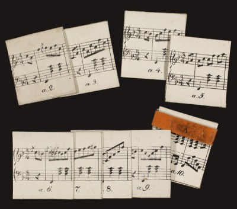

Indledning
Friedrich Kuhlaus (1786-1832) Kaleidakustikon skriver sig ind i en tradition af musikalske spil, som nød en vis popularitet især i anden halvdel af det 18. århundrede. Spillene har det til fælles, at de indeholder en række musikalske fragmenter, som kan kombineres til små kompositioner efter bestemte regler. Det er op til den eller de udøvende at udvælge en kombination mere eller mindre tilfældigt, f.eks. ved terningkast.
Kort fra bunke A
Kaleidakustikon blev udgivet på en række europæiske forlag, bl.a. C. C. Lose i København, Böhme i Hamburg og Spehr i Braunschweig.1 I Danmark kom Kaleidakustikon i handelen i 1820, som det fremgår af en annonce i Adresseavisen. Heri hedder det:
Kaleidakustikon, en musicalsk Underholdning for Claveerspillere, af Fr. Kuhlau. Dette Kaleidakustikon, der, med Hensyn til dets uendeligmange Forandringer, er det samme for Øret, som Kaleidoscopet for Øiet, bestaaer af en liden Kasse, som indeholder Kort, hvorpaa er trykt Noder, ved hvis Hjælp man, efter den med hver Kasse følgende trykte tydelige Forklaring, kan, endog med blotte Terningekast, selv danne sig saa mange Valtse, man behager. Exemplarer heraf, til 5 Rbd. i Sedler Stykket, ere at bekomme i Richters og Bechmanns Musikhandel i Kristalgaden Nr. 50. Enkelte Pragtexemplarer koste noget mere.2
En billigere udgave blev annonceret et par måneder senere i forbindelse med at forlaget C. C. Lose overtog Kaleidakustikon:
Undertegnede har nu overtaget Forlaget af den musicalske Underholdning for Claveerspillere af Hr. Kammermusicus Kuhlau og foranstalter en ny og billigere Udgave heraf, hvorved samme kan sælges for 3 Rbd. Sedler. Foruden at yde Claveerspillere en behagelig Underholdning, giver denne sindrige Opfindelse tillige Leilighed til Øvelse i Tonesætning og Uddannelse af musicalske Kundskaber, som nærmere erfares af den med samme følgende udførlige Forklaring om Anvendelsen heraf.3
At Kuhlaus Kaleidakustikon også udkom i Holland, fremgår af et andet eksemplar, som blev solgt på en auktion i 2012. Dette eksemplar – det p.t. eneste andet kendte udover Det Kongelige Biblioteks – er trykt hos F. J. Weygand i Amsterdam, som det fremgår af den tysksprogede brugsanvisning.
I efteråret 1821 udkom Kaleidakustikon desuden i London under titlen Kaleidakousticon. Amusement for Piano-Forte Players, by Means of which Persons wholly unacquainted with Musical Composition, may easily compose and execute upwards of Two Hundred and Fourteen Millions of Waltzes.4 En udførlig anmeldelse af London-forlaget Treuttel & Würtz' udgave beklagede dels den ringe oversættelse af brugsanvisningen til engelsk, dels regnefejlen med hensyn til det mulige antal permutationer. Sandt nok er der en del flere end de 214 millioner muligheder – om ikke uendeligt mange, som annonceret i Adresseavisen, så dog 1121, dvs. ikke færre end 7.400.249.944.258.160.101.211 eller mere end 7.400 trilliarder. Med hensyn til den kompositoriske kvalitet måtte anmelderen dog medgive, at
Mr. K.'s labour merits a high degree of our commendation; the few trials we have made have turned out remarkably satisfactory. Once or twice we hit upon rather awkward skips; but these, no doubt, contribute to the striking variety which is perceptible in the several changes.5
Samme anmeldelse blev bragt den 22. juni samme år i musiktidsskriftet The Euterpeiad: Or, Musical Intelligencer i Boston og vidner om, at udgivelsen om ikke andet blev bemærket også i USA.
I London blev Kaleidakustikon tilsyneladende genudgivet af forlaget Whittaker & Co. i anledning af Dronning Victorias kroning. Kaleidakustikon havde åbenbart ikke sat sig tydeligere spor i erindringen ved sin første udgivelse end at den nu – 16 år senere – kunne præsenteres som en nyhed. I The Lady's Magazine and Museum kan man således finde følgende annonce i december 1837:
The Kalæidacousticon, or
Victoria Commemoration Gift. Whittaker and Co.
This most curious combination is
presented to the public at a most appropriate season, when those things
alone which are known to be agreeable to Her Majesty, take with the
public. In a small compass several millions of waltz combinations are
packed, leaving to the lover of harmony the grateful employment of
making an infinite and endless variety of changes; all this quantity of
excellent music is now to be purchased at the triflilng cost of one
half guinea. Few things for presents could be more acceptable to
musical persons, or better adapted to call forth the talent opf the
youthful student.6